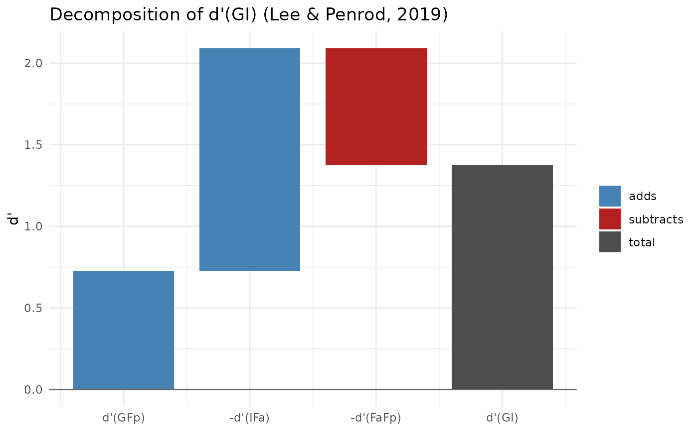

Multi-d' Model of Lineup Performance (Lee & Penrod, 2019)
Source:R/multid_functions.R
make_multid.RdComputes the multiple empirical discriminability (d') indices of Lee and Penrod's (2019) Multi-d' model from target-present (TP) and target-absent (TA) lineup data. Unlike the conventional 2 x 2 signal detection treatment, which folds filler identifications into "negative" responses, the Multi-d' model uses the full 2 x 3 response table (suspect ID, filler ID, rejection) in each lineup type.
Arguments
- data
A data frame with columns
target_present(logical) andidentification("suspect","filler"or"reject"). Aconfidencecolumn is needed only whenby_confidence = TRUE. TA rows withidentification == "suspect"mark a designated innocent suspect; if there are none, the innocent suspect is estimated from filler choices (see Details). Supply eitherdataorcounts.- counts
A named numeric vector of response frequencies with elements
G(guilty-suspect IDs),Fp(TP filler IDs),Rp(TP rejections),I(innocent-suspect IDs),Fa(TA filler IDs) andRa(TA rejections). OmitI(or set it toNA) when the TA lineups have no designated innocent suspect;Fais then the total number of TA filler IDs and is split as described in Details. Proportions may be supplied in place of frequencies, providedn_bootstrap = 0.- lineup_size
Nominal lineup size (suspect plus fillers). Default 6.
- filler_rate
Either
"total"(default), which uses the total filler ID rate as Lee and Penrod (2019) do, or"per_filler", which divides each filler ID rate by the number of fillers (lineup_size - 1) so that the filler indices refer to an average single filler.- correction
Correction for rates of 0 or 1:
"loglinear"(default),"half"or"none". Seesdt_summary_from_counts. Use"none"to reproduce published values computed from raw proportions.- by_confidence
Logical. If
TRUE, the indices are also computed cumulatively by confidence, as in Lee and Penrod's (2019) Table 9. Requiresdatawith aconfidencecolumn.- conf_thresholds
Optional numeric vector of confidence thresholds for
by_confidence. Defaults to every observed confidence value.- n_bootstrap
Number of bootstrap resamples for percentile confidence intervals (default 0, no bootstrap). Resampling is done within the TP and TA arms separately.
- conf_level
Confidence level for bootstrap intervals. Default 0.95.
- seed
Optional random seed for the bootstrap.
Value
An object of class "multid", a list with:
- indices
Data frame of indices with estimates and, if bootstrapped, standard errors and percentile confidence limits.
- rates
Named vector of the six response rates used (after correction and, if requested, per-filler scaling).
- counts
Named vector of the six response counts (after any average-filler split).
- n_tp, n_ta
Number of TP and TA lineups.
- innocent_method
"designated"or"estimated_from_fillers".- by_confidence
Data frame of cumulative indices by confidence threshold, or
NULL.- boot
Matrix of bootstrap draws, or
NULL.
plus the settings used.
Details
With each d' computed as the difference between two z-transformed (inverse-normal) response rates, the model defines:
\(d'(GI) = z(G) - z(I)\): guilty versus innocent suspect, the usual empirical discriminability;
\(d'(GFp) = z(G) - z(Fp)\): guilty suspect versus TP fillers;
\(d'(IFa) = z(I) - z(Fa)\): innocent suspect versus TA fillers, which Lee and Penrod treat as TA lineup bias;
\(d'(FaFp) = z(Fa) - z(Fp)\): the greater appeal of TA than TP fillers (differential filler siphoning);
\(d'(RaRp) = z(Ra) - z(Rp)\): discrimination of culprit presence from culprit absence (detection).
Lee and Penrod also propose \(d'(GFp) - d'(RaRp)\) as an index of TP lineup bias net of memory strength, and \(d'(GFp) - d'(IFa)\) as an index of differential filler siphoning. The decomposition $$d'(GI) = d'(GFp) - d'(IFa) - d'(FaFp)$$ holds exactly for any data, because the filler terms cancel. It is an accounting identity that shows where d'(GI) comes from, not an empirical result.
When TA lineups have no designated innocent suspect, the innocent-suspect
count is estimated as the TA filler count divided by lineup_size, and
the remaining \((k - 1)/k\) of filler choices are kept as TA filler IDs.
Lee and Penrod call this the "average-filler" practice. It forces the TA
lineup to be fair, so d'(IFa) then reflects the rejection rate rather than
lineup bias.
With filler_rate = "total", a perfectly fair TA lineup does not give
\(d'(IFa) = 0\): the innocent suspect is compared with all fillers
together. The returned fair_reference is the d'(IFa) a perfectly
fair lineup would give at the observed TA rejection rate (for example,
about -1.93 when no one rejects a 6-person lineup), and ifa_vs_fair
is the observed d'(IFa) minus that reference. These two quantities are not
part of Lee and Penrod's model; they are provided to help interpret d'(IFa).
With filler_rate = "per_filler", the fair reference is 0, and the
average-filler practice gives d'(IFa) = 0 exactly when correction =
"none" (a rate correction shifts the two rates slightly differently).
The criterion c is \(-(z(G) + z(I))/2\) and dr is the
diagnosticity ratio G/I, both as reported by Lee and Penrod (2019).
References
Lee, J., & Penrod, S. D. (2019). New signal detection theory-based framework for eyewitness performance in lineups. Law and Human Behavior. doi:10.1037/lhb0000343
Lee, J., Mansour, J. K., & Penrod, S. D. (2022). Validity of mock-witness measures for assessing lineup fairness. Psychology, Crime & Law. doi:10.1080/1068316X.2021.1905811
Lee, J., Mansour, J. K., & Penrod, S. D. (2024). How to measure lineup fairness: Concurrent and predictive validity of lineup-fairness measures. Psychology, Crime & Law. doi:10.1080/1068316X.2024.2307358
Examples
# Lineup column of Lee & Penrod's (2019) Table 4 (Steblay et al., 2003)
md <- make_multid(counts = c(G = 45, Fp = 24, Rp = 31, I = 17, Fa = 26, Ra = 57),
correction = "none")
md
#> Multi-d' model (Lee & Penrod, 2019)
#> TP lineups: 100 TA lineups: 100 Lineup size: 6
#> Innocent suspect: designated Filler rate: total Correction: none
#>
#> Response rates:
#> G Fp Rp I Fa Ra
#> 0.45 0.24 0.31 0.17 0.26 0.57
#>
#> description estimate
#> d'(GI): guilty vs innocent suspect 0.83
#> d'(GFp): guilty suspect vs TP fillers 0.58
#> d'(IFa): innocent suspect vs TA fillers (TA bias) -0.31
#> d'(FaFp): TA vs TP filler appeal 0.06
#> d'(RaRp): culprit presence vs absence 0.67
#> d'(GFp) - d'(RaRp): TP lineup bias -0.09
#>
#> Decomposition: d'(GI) = d'(GFp) - d'(IFa) - d'(FaFp): 0.83 = 0.58 - (-0.31) - (0.06)
#> Fair-lineup reference for d'(IFa): -1.10 (observed minus reference: 0.79)
# From trial-level data, with bootstrap CIs and confidence breakdown
data(lineup_example)
md2 <- make_multid(lineup_example, by_confidence = TRUE,
n_bootstrap = 200, seed = 1)
summary(md2)
#> Multi-d' model (Lee & Penrod, 2019)
#> TP lineups: 700 TA lineups: 700 Lineup size: 6
#> Innocent suspect: designated Filler rate: total Correction: loglinear
#>
#> Response rates:
#> G Fp Rp I Fa Ra
#> 0.593 0.312 0.096 0.126 0.587 0.287
#>
#> description estimate se ci_lower
#> d'(GI): guilty vs innocent suspect 1.379 0.082 1.192
#> d'(GFp): guilty suspect vs TP fillers 0.726 0.092 0.525
#> d'(IFa): innocent suspect vs TA fillers (TA bias) -1.364 0.094 -1.548
#> d'(FaFp): TA vs TP filler appeal 0.711 0.073 0.575
#> d'(RaRp): culprit presence vs absence 0.742 0.086 0.590
#> d'(GFp) - d'(RaRp): TP lineup bias -0.017 0.122 -0.258
#> ci_upper
#> 1.522
#> 0.885
#> -1.175
#> 0.861
#> 0.909
#> 0.194
#>
#> Decomposition: d'(GI) = d'(GFp) - d'(IFa) - d'(FaFp): 1.379 = 0.726 - (-1.364) - (0.711)
#> Fair-lineup reference for d'(IFa): -1.419 (observed minus reference: 0.054)
#>
#> All indices:
#> index estimate se ci_lower ci_upper
#> GI 1.379 0.082 1.192 1.522
#> GFp 0.726 0.092 0.525 0.885
#> IFa -1.364 0.094 -1.548 -1.175
#> FaFp 0.711 0.073 0.575 0.861
#> RaRp 0.742 0.086 0.590 0.909
#> tp_bias -0.017 0.122 -0.258 0.194
#> siphoning 2.090 0.139 1.822 2.355
#> fair_reference -1.419 0.024 -1.467 -1.373
#> ifa_vs_fair 0.054 0.090 -0.115 0.240
#> c 0.455 0.035 0.386 0.516
#> dr 4.695 0.499 3.741 5.703
#>
#> Cumulative indices by confidence (responses at or above threshold):
#> threshold G Fp Rp I Fa Ra GI GFp IFa FaFp RaRp
#> 100 0.098 0.011 0.001 0.001 0.029 0.001 1.895 1.006 -1.297 0.409 0.000
#> 90 0.143 0.019 0.001 0.006 0.044 0.001 1.423 1.004 -0.777 0.358 0.000
#> 80 0.189 0.039 0.001 0.015 0.065 0.001 1.289 0.878 -0.656 0.245 0.000
#> 70 0.260 0.076 0.001 0.024 0.128 0.001 1.343 0.788 -0.848 0.293 0.000
#> 60 0.352 0.109 0.001 0.031 0.180 0.001 1.490 0.850 -0.957 0.318 0.000
#> 50 0.436 0.163 0.001 0.055 0.270 0.001 1.437 0.819 -0.987 0.369 0.000
#> 40 0.507 0.218 0.001 0.078 0.369 0.001 1.438 0.798 -1.085 0.445 0.000
#> 30 0.556 0.265 0.001 0.103 0.479 0.001 1.402 0.769 -1.209 0.575 0.000
#> 20 0.593 0.312 0.096 0.126 0.587 0.287 1.379 0.726 -1.364 0.711 0.742
#> c dr
#> 2.242 137.000
#> 1.777 22.333
#> 1.526 12.619
#> 1.314 11.061
#> 1.126 11.465
#> 0.880 7.935
#> 0.701 6.523
#> 0.561 5.372
#> 0.455 4.695
plot(md2)
